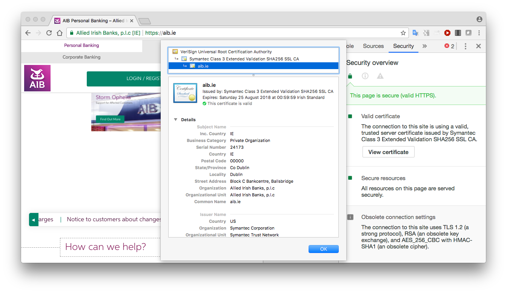

Use OpenSSL for key generation, encryption, authentication and digital certificate issuance
OpenSSL is an open source cryptographic toolkit that implements SSL/TLS. Tools are available to carry out key generation and storage, encryption and authentication with a selection of the most widely used algorithms, the creation and management of digital certificates, and various other related activities.
OpenSSL is available from http://www.openssl.org/. OpenSSL tools are available at the command line and as an API. We will use the command-line OpenSSL tools in this exercise.
OpenSSL comes pre-installed with most versions of Linux and MacOS. To use it, you just need to enter the openssl command in a terminal. You may use an Amazon instance or your local machine. Linux is recommended for OpenSSL but, if you prefer to work in Microsoft Windows, there is a Windows version
With OpenSSL, by entering the openssl command (with no option or arguments), the tool enters “interactive” mode; a prompt indicates that the program is ready to process standard openssl commands. Entering:
opensslgives a prompt that looks like this:
OpenSSL >When the execution of a command is completed, the prompt reappears, indicating that the tools is ready to execute another openssl command. OpenSSL commands can be followed by zero or more options, depending on the command and how it is used.
You can exit from the command-line tool by executing:
OpenSSL > quitYou can see what version of OpenSSL is installed by going back into interactive mode and entering:
OpenSSL > versionOpenSSL 1.0.2g 1 Mar 2016
You can get a list of OpenSSL commands by entering any invalid command, or by reading the online OpenSSL documentation online.
Alternatively you can execute OpenSSL commands directly from the Linux prompt using the general command format:
openssl command [options]Depending on the command, there may be zero or more options. For example, you could enter:
openssl versionOpenSSL 1.0.2g 1 Mar 2016
We will use Batch mode in this exercise.
Launch Linux or other environment that has OpenSSL installed and start a terminal session.
Create a new folder and navigate into that folder (using the cd command).
Generate random numbers of various lengths to be used as encryption keys for various symmetric algorithms. What key length do you need for DES? AES? Set things up for at least three different symmetric algorithms (look at the OpenSSL documentation to find another algorithm besides DES and AES). To generate a 128-bit key for example, enter the following:
openssl rand -out key1 16 # 128 bits is 16 bytesCreate a new text file with some plaintext as its body e.g. “The quick brown fox jumped over the lazy dog”. Save this file in the folder you created. Choose a file name containing something like “plaintext” or “unencrypted” – e.g. plaintext.txt
Encrypt the plaintext file using each of the three algorithms chosen, for example:
openssl enc -aes-128-cbc -e -kfile key1 -in plaintext.txt -out ciphertext_aes.bin
openssl enc -des -e -kfile key2 -in plaintext.txt -out ciphertext_des.bin
etcYou may wish to share an encrypted file with a classmate and see if they can decrypt it. You’ll also need to share the key.
Try to read a ciphertext file to see if it makes any sense (it shouldn’t):
cat ciphertext_aes.bin # (or whatever the filename is)Decrypt each file using commands similar to this:
openssl enc -aes-128-cbc -d -kfile key1 -in ciphertext_aes.bin -out decrypted.txtHopefully you can read the decrypted file:
cat decrypted.txtCreate a new file, this time with a lot of English language words or similar (say about 10MB in total - here is an example you can download. Call it bigplaintext.txt. Encrypt it using an algorithm of your choice to produce bigciphertext.bin. Check the size of the encrypted file and compare with the original.
ls –l # (this is letter “l”, not number “1”)provides a detailed listing of files in the current directory, including their sizes.
Compress both the original text file and the encrypted file. You can use any popular general-purpose compression program such as zip; e.g.
zip bigplaintext.zip bigplaintext.txt
zip bigciphertext.zip bigciphertext.binWhich resulting zip file is bigger? Why is this the case?
Create a new folder and navigate into that folder (using the cd command).
To generate a public/private key pair for the RSA algorithm, enter the following:
openssl genrsa -aes128 -out rsa_private.pem 2048You will be prompted for a protecting password. If you don't want your private key to be protected by a password, remove the flag “-aes128” from the command line above. The number 2048 is the size of the RSA key, in bits.
The public key should be extracted from this to allow it to be shared with others. You can extract the public key by entering the following:
openssl rsa -pubout -in rsa_private.pem -out rsa_public.pemYou should have two files now, a private one and a public one.
Create a text file with some plaintext as its body”. Save this file in the folder you created. Choose a file name containing something like “plaintext” or “unencrypted” – e.g. plaintext.txt
Encrypt the plaintext file using your public key (or get a classmate to do it):
openssl rsautl -encrypt -inkey rsa_public.pem -pubin -in plaintext.txt -out ciphertext.binThe “-pubin” option indicates that you are using a public key from the specified input key file; the default is to look for a private key.
Decrypt the ciphertext file using your private key:
openssl rsautl -decrypt -inkey rsa_private.pem -in ciphertext.bin -out decrypted.txtCheck that the decrypted ciphertext matches the original plaintext:
openssl dgst –sha256 plaintext.txt
openssl dgst –sha256 decrypted.txt(see later section on hash functions for more on the dgst command)
Encrypt (sign) the plaintext file using your private key:
openssl rsautl -sign -inkey rsa_private.pem -in plaintext.txt -out plaintext_sig.binDecrypt (verify) the signed file using your public key (or get a classmate to do it):
openssl rsautl -verify -inkey rsa_public.pem -pubin -in plaintext_sig.binThe verfied original text will be output to the console. This can alternatively be directed to a file using “-out filename”.
A cryptographic hash function is used to provide message integrity. A signed hash is often also used for message authentication. Hash functions are one-way functions that provide a fixed-sized output, regardless of the size of the input.
Create a test file containing some text.
Using OpenSSL, find MD5, SHA1 and SHA-256 hash values for this file. Verify the number of bits generated in each case. To find the SHA-1 hash of a file called testfile.txt, you would enter:
openssl dgst –sha1 testfile.txt # SHA-1 algorithm in this exampleAlternatively, you can provide the input to openssl’s standard input; e.g.:
echo -n "topsecretpassword" | openssl dgst -sha256 # SHA-256 algorithm(Note that the echo statement normally adds a newline character to the end of the supplied string and this would affect the hash value output. The -n switch removes this.)
Modify the input very slightly and see how the hash values change.
Add some additional text. Do the hash values increase in size?
Find the hash values of some common dictionary words. Give them to a classmate.
See if you can find a way to reverse the hashing process – i.e. get hash values from a classmate and try to find the original input. Hint: Google
The objectives of this step are to examine digital certificates.
Visit any website that provides https:// access.
Copy its server certificate to a DER-encoded or PEM-encoded file (usually ".cer", “.crt” or ".pem" extension”). How you do this depends on the browser:

These certificate formats are binary. Try to read them with a text editor; e.g.
cat moodlecert.ceror
cat moodlecert.pem(actually PEM format is Base64-encoded, meaning that it is printable text, but it is not human-readable)
OpenSSL provides tools to allow us to examine and manipulate certificates. For example the following command allows us to view certificate details; e.g.
openssl x509 -inform DER -in moodlecert.cer -text -nooutor
openssl x509 -inform PEM -in moodlecert.crt -text -noout(the -noout option here suppresses printing of the PEM-encoding as well, which is the default)
or output to a human-readable text file:
openssl x509 -inform DER -in moodlecert.cer -text –noout > moodlecert.txtYou can also convert between certificate formats using OpenSSL:
openssl x509 -inform DER -in moodlecert.cer -outform PEM -out moodlecert.pemIn this step, you will benchmark the performance of various encryption algorithms on your machine.
Create or locate a large test file, say 1GB - link to sample 1GB file.
Record how much time it takes to encrypt it using various encryption algorithms . Which is fastest? To do this, use the time command, which is simply prefixed to the command you are running, like this:
time openssl enc -aes-128-ecb -e -kfile key128 -in plaintext.zip -out /dev/nullreal 0m0.736s user 0m0.576s sys 0m0.057s(the sum of user and sys time is what matters)
If you have time, see how the performance of RSA public key encryption compares to the symmetric algorithms above. How about the performance of RSA key generation (try large RSA keys – e.g. 2048/4096/8192 bits)?